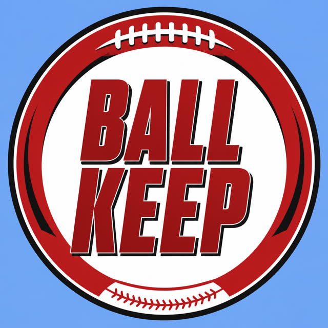

BALL KEEP
Dynasty · Redraft
BK News · Injury
Aggregate
Week 18 NFL Injury Report: Lamar Jackson Returns for Must-Win Game FOX Sports Ian Rapoport on latest injury news for Lamar Jackson, Ja'Marr Chase | 'GMFB' NFL.com The Ravens deactivated four players for their Week 4 matchup with the Titans. Aggregated from FOX Sports, NFL.com, SB Nation, Yahoo Sports, ProFootball Talk on NBC Sports and 31 more.
Players on this story
QB BAL
WR CIN
TE ARI
RB PHI
WR KC
WR LAR
WR BAL
RB KC
QB TEN
Tape
The Ravens deactivated four players for their Week 4 matchup with the Titans.
Final Injury Report for Titans-Ravens: Will Lamar Jackson, Zay Flowers Play? Yahoo Sports
Is Zay Flowers Playing Sunday? Latest Injury Update on Ravens WR Yahoo Sports
Lamar Jackson left Sunday's game with an ankle injury and was replaced at the start of the second half by backup Tyler Huntley.
Ravens quarterback Lamar Jackson did not play in the second half of Sunday's win over the Titans because of an ankle injury, but head coach Jesse Minter did not make it sound like there's much fear of a long-term injury after the game.
Ravens quarterback Lamar Jackson did not play in the second half of Sunday's win over the Titans because of an ankle injury, but head coach Jesse Minter did not make it sound like there's much fear of a long-term injury after the game.
Lamar Jackson sat out the second half with an ankle injury, but the Ravens didn't need him as they cruised to a win.
The Ravens are having a great day, but they're now holding their collective breath.
Jackson (ankle) was seen wearing a walking boot on his left foot after Sunday's 24-18 victory against the Titans, Brian Wacker of The Baltimore Sun reports. Visit RotoWire.com for more analysis on this update.
Lamar Jackson update: What’s the latest news on Ravens QB after concerning injury? Yahoo Sports
Tyler Huntley opened the second half at quarterback with Baltimore leading Tennessee 24-7
Ravens quarterback Lamar Jackson's day came to an early end due to an ankle injury, but signs continue to show that Jackson avoided any serious damage.
Fantasy football injury report: Latest Week 4 updates on Puka Nacua, Lamar Jackson, more USA Today
Lamar Jackson injury: Latest on Ravens QB's status vs. Falcons Yahoo Sports
Ravens quarterback Lamar Jackson exits win over Titans early due to ankle injury NFL.com
Ravens quarterback Lamar Jackson exits game vs. Titans with ankle injury NBC News
Lamar Jackson injures ankle during Ravens' win over Titans ESPN
Lamar Jackson left stadium in a boot, believed to be day-to-day with ankle injury NBC Sports
Ravens QB Lamar Jackson sits out second half vs. Titans with ankle injury The New York Times
Ravens QB Lamar Jackson exits game vs. Titans with ankle injury Yahoo Sports
Lamar Jackson injury: Ravens star sprains ankle vs. Titans Yahoo Sports
Lamar Jackson exits Ravens-Titans game with ankle injury Yahoo Sports
Lamar Jackson injury update as Ravens QB hurts ankle vs Titans Yahoo Sports
Lamar Jackson Injured, Latest Updates on Ravens Star's Ankle Injury After Exiting Early vs. Titans Bleacher Report
Ravens QB Lamar Jackson Exits Game With Ankle Injury Against Titans FOX Sports
Lamar Jackson Injury Update: Ravens QB Leaves Game Against Titans heavy.com
Lamar Jackson injury: Ravens QB being monitored, considered day-to-day after exiting vs. Titans CBS Sports
Lamar Jackson Injury Update: Latest News on Ravens QB's Status vs. Titans Yahoo Sports
Ravens QB Lamar Jackson Exists Titans Game Due to Apparent Injury Yahoo Sports
Ravens top Titans 24-18, but Lamar Jackson exits with ankle injury 247Sports
Lamar Jackson injury: Ravens star sprains ankle vs. Titans SB Nation
Will Lamar Jackson bets be refunded after injury during Ravens vs. Titans NFL Week 4? DraftKings Network
Lamar Jackson injury update in Week 4 Titans vs. Baltimore Ravens Yahoo Sports
Kevin Winston Jr., Lamar Jackson injury updates in Week 4, Titans vs. Ravens The Tennessean
Lamar Jackson injury: will the Ravens quarterback play against the Titans? DAZN
Ravens lose 4 major contributors, including QB Lamar Jackson, vs. Titans The Baltimore Banner
Ravens hold off Titans, 24-18, after Lamar Jackson exits with ankle injury Yahoo Sports
Ravens QB Lamar Jackson exits vs. Titans with ankle injury, doesn’t return Baltimore Sun
Lamar Jackson leaves Ravens-Titans game with ankle injury, replaced by Tyler Huntley in 2nd half Yahoo Sports
Lamar Jackson exits vs. Titans due to ankle injury thescore.com
Baltimore Ravens QB Lamar Jackson injured against Titans, what injury does he have? Will he return? Diario AS
Ravens Injury Report Week 4: Lamar Jackson Added to Long List Yahoo Sports
What happened to Lamar Jackson and who’s Ravens backup on QB depth chart vs Titans today? bolavip.com
Ravens beat Titans 24-18 but lose Lamar Jackson to ankle injury; Henry scores against his old team The Tribune-Democrat
Ravens upgrade Lamar Jackson, Zay Flowers on Thursday injury report Yahoo Sports
Ravens beat Titans 24-18 but lose Lamar Jackson to ankle injury. Henry scores against his old team Eagle-Tribune
Lamar Jackson injury update raises concerns about Ravens QB yardbarker.com
Lamar Jackson Injury Update: How serious is the ankle injury? NFL Draft Diamonds
Kenneth Walker Ankle injury not serious Fantasy Footballers Podcast
Ravens injury report: Lamar Jackson, Zay Flowers are full participants Baltimore Sun
Final Injury Report for Titans-Ravens: Will Lamar Jackson, Zay Flowers Play? Athlon Sports
Jackson injured his ankle in the first half of Sunday's win over the Titans
Follow along with the latest NFL news coming out of Week 4.
NFL news, live updates: Saquon Barkley week-to-week with hamstring injury, Lamar Jackson dealing with sprained ankle Yahoo Sports
NFL Injury Report 2026 - Fantasy Football Week 5: Lamar Jackson, Rashee Rice Fantasy Alarm
NFL Injury Report & Analysis: Lamar Jackson Ankle Sprain RotoWire
Lamar Jackson injury update raises major concern for Baltimore Ravens Yahoo Sports
Lamar Jackson Injury Update: Ravens QB Leaves Game In Boot Yahoo Sports
Lamar Jackson injury update: Ravens QB dealing with ankle sprain; Week 5 status still unknown, per report CBS Sports
#Ravens QB Lamar Jackson is dealing with a sprained ankle that gives him only an outside chance to play Sunday against the #Falcons, sources say. Jackson could end up missing multiple games based on how rehab goes, but the injury is not considered lo X
Week 18 NFL Injury Report: Lamar Jackson Returns for Must-Win Game FOX Sports
Ian Rapoport on latest injury news for Lamar Jackson, Ja'Marr Chase | 'GMFB' NFL.com
Status alert: Lamar Jackson (ankle) questionable to return Sunday. x.com
Lamar Jackson is now questionable to return with an ankle injury x.com
#NFL Injury Updates #Bengals Ja'Marr Chase - Avg = 8 days. ~1/3 would return Wk 5 w/o missing time. Most miss 1 game, return the following w/o dip #Ravens Lamar Jackson - Video suggests mild high ankle. Avg = 2 wks. Most would miss at least 1 wk. Re-in x.com
Ravens hold serve after Lamar Jackson’s injury. What We Learned from Baltimore's victory over Tennessee, via @kownack https://t.co/miK3bqM2C5 x.com
.@Ravens DL Calais Campbell discusses the injury to QB Lamar Jackson and how he feels about the team after the win in Week 4. 📻 https://t.co/ycO6aUT0AG #Ravens | #RavensFlock x.com
#Ravens QB Lamar Jackson is believed to be day-to-day with his ankle injury, one that will be monitored and treated this coming week. x.com
QB Lamar Jackson (ankle) is questionable to return. x.com
Lamar Jackson is questionable to return vs. the Titans today due to an ankle injury. x.com
Coach Minter on Lamar Jackson: x.com
Lamar Jackson Ankle injury update YouTube
Lamar Jackson Had the Ravens Rolling Before the Injury 🥹 YouTube
NFL Week 4 news: Lamar Jackson injury update, Trey McBride's encounter with ref | FNIA | NFL on NBC YouTube